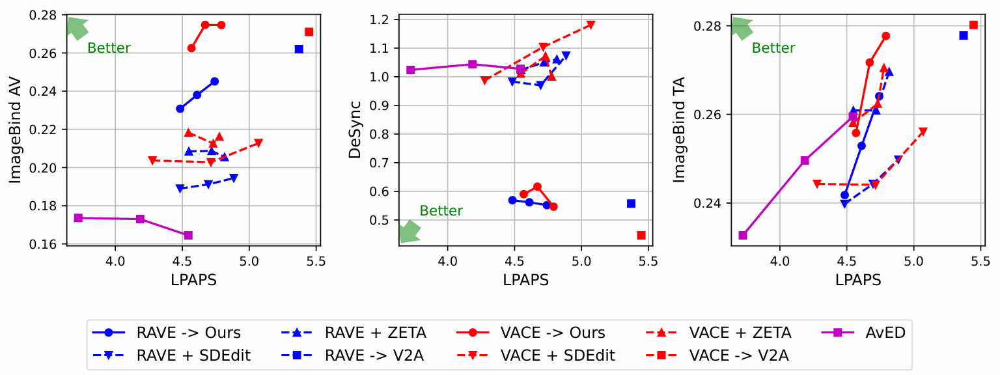
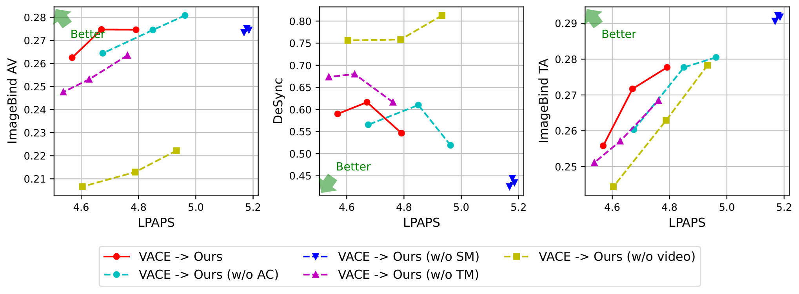

Abstract
We introduce a novel pipeline for joint audio-visual editing that enhances the coherence between edited video and its accompanying audio. Our approach first applies state-of-the-art video editing techniques to produce the target video, then performs audio editing to align with the visual changes. To achieve this, we present a new video-to-audio generation model that conditions on the source audio, target video, and a text prompt. We extend the model architecture to incorporate conditional audio input and propose a data augmentation strategy that improves training efficiency. Furthermore, our model dynamically adjusts the influence of the source audio based on the complexity of the edits, preserving the original audio structure where possible. Experimental results demonstrate that our method achieves a favorable trade-off between audio-visual alignment and preservation of the source audio structure.
Generated Examples
Each example first edits the source video with a video editing method (RAVE or VACE), then edits the audio to match. We compare our audio editing model against ZETA, SDEdit, and V2A baselines, as well as the joint video+audio editing baseline AvED. Columns labeled Ours are highlighted.
Main Results
We compare three approaches to audio-visual editing on AvED-Bench: independent editing, where the video is edited with RAVE or VACE and the audio with SDEdit or ZETA separately; sequential editing, where the audio is edited after the video, either by our model (RAVE/VACE → Ours) or by a naive video-to-audio model that ignores the source audio (RAVE/VACE → V2A); and joint editing with AvED. Each plot shows structure preservation (LPAPS, lower is better) on the horizontal axis against coarse-grained audio-visual alignment (IB-AV, higher is better), fine-grained audio-visual alignment (DeSync, lower is better), and text fidelity (IB-TA, higher is better). For each method except V2A, we varied the hyperparameters to obtain results with different degrees of structure preservation.

Figure not yet available here — see Fig. 4 in the paper (arXiv) for the full results.
- Sequential editing gives the best alignment: by leveraging a state-of-the-art video-to-audio architecture, sequential methods achieve much higher IB-AV and lower DeSync than independent methods, which lack any audio-video alignment mechanism, and than AvED, which struggles to edit both modalities jointly.
- Our model preserves the source audio structure: naive video-to-audio generation cannot account for the source audio and yields poor structure preservation, whereas our model maintains the source structure while achieving high audio-visual alignment and text fidelity. Its slightly worse DeSync than V2A reflects an inherent trade-off: conditioning on the source audio constrains the model to retain the original temporal structure.
- Better video editing helps: the advantage of RAVE → Ours is marginal, especially in text fidelity, because RAVE sometimes fails to produce videos aligned with the text prompt, leaving our model with semantically contradicting video and text conditions.
Video quality of the edited videos is reported in Video Quality.
Ablation Study
We study how much each component contributes to edited-audio quality by removing, in turn, the Synchformer feature modulation (SM), the temporal masking (TM) used during training, and the adaptive conditioning (AC) that controls how much source-audio structure is preserved for a given edit.

Figure not yet available here — see Fig. 5 in the paper (arXiv) for the full LPAPS vs. ImageBind alignment plot.
- Without SM: generated sounds show similar LPAPS across detail levels while still scoring well on audio-visual alignment and text fidelity — modulating Synchformer features is what lets conditional acoustic information actually reach the generated audio.
- Without TM: quality drops on both audio-visual alignment and text fidelity, showing that temporal-masking augmentation is important for training even though it is never applied at inference time.
- Without AC: LPAPS is generally higher than with AC while alignment and text fidelity stay similar, showing that adaptively controlling the level of detail based on editability is what preserves acoustic structure accurately without hurting generation quality.
Subjective Evaluation
Eleven raters each evaluated six edited videos, scoring audio-text fidelity, audio-visual alignment, and audio structure preservation on a 1–5 scale after watching the source video followed by each edited version.
| Method | Audio-text fidelity | Audio-visual alignment | Audio structure preservation |
|---|---|---|---|
| VACE → ZETA | 3.0 (± 0.5) | 2.6 (± 0.7) | 2.5 (± 0.7) |
| VACE → V2A | 3.2 (± 0.6) | 3.3 (± 0.6) | 3.2 (± 0.5) |
| AvED | 2.7 (± 0.4) | 2.5 (± 0.6) | 3.1 (± 0.4) |
| VACE → Ours | 3.7 (± 0.5) | 3.8 (± 0.3) | 3.9 (± 0.2) |
Mean opinion score ± 95% confidence interval. Bold indicates the best score per column.
Video Quality
We evaluate the quality of the edited videos on AvED-Bench following the VBench protocol. Our pipeline uses an off-the-shelf video editing method (RAVE or VACE) as its first stage, so the edited video is identical regardless of the audio editing method applied afterwards; we therefore compare these video editing methods against the joint audio-visual editing baseline AvED.
| Method | Subject consistency ↑ | Background consistency ↑ | Dynamic degree ↑ | Motion smoothness ↑ | Aesthetic quality ↑ |
|---|---|---|---|---|---|
| AvED | 0.84 | 0.92 | 0.72 | 0.96 | 0.42 |
| RAVE | 0.91 | 0.94 | 0.54 | 0.98 | 0.47 |
| VACE | 0.90 | 0.93 | 0.59 | 0.98 | 0.54 |
VBench scores of edited videos on AvED-Bench. Higher is better for all metrics. Bold indicates the best score per column.
Both RAVE and VACE outperform AvED in four of the five metrics, all except dynamic degree, supporting the benefit of leveraging recent video editing models in our sequential pipeline.